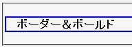
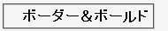

2003-07-09修正。補足を追加。
一意セレクタ（#myid）を使用するとき 要素名#myid という形式で指定すると、このセレクタを認識しない。
<style type="text/css">
p#sample {
border: 2px solid blue;
}
#sample {
font-weight: bold;
}
</style>
<p id="sample">ボーダー＆ボールド</p>
ボーダー＆ボールド
両方のセレクタを認識していれば、p要素は実線ボーダーが設置され、内容物がボールドで表示されるはずです。
N7.02での表示
NN4.8での表示
このバグはブラウザ振り分けに役立てることができます。NN4.xで適用させたくないスタイルは要素名つき一意セレクタに、NN4.xでも適用させたいスタイルは要素名を省略した一意セレクタに対して指定してください。
ただし、親要素に自身と同じ名称の要素があるときは要素名つき一意セレクタを認識します。
<style type="text/css">
span#sample1 {
font-weight: bold;
}
</style>
<p><span><span id="sample1">ボールド</span></span></p>
ボールド
要素名が同じであれば親と子の場合に限らず、親と孫あるいはより離れた関係にあってもセレクタが有効になります。例えば、以下のような場合でもNN4は div#sample というセレクタを認識します。
<div><table><tr><td> <div id="sample">スタイル</div> </td></tr></table></div>
NN4.8で不具合の発生が確認されました。